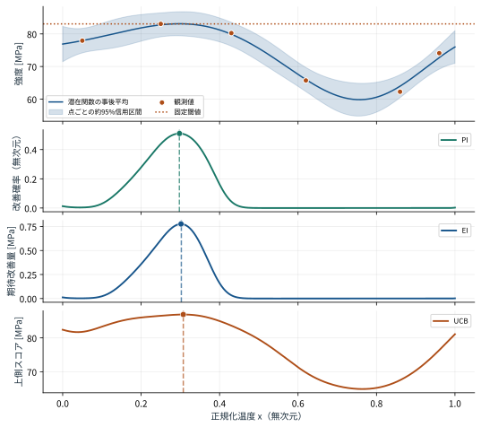
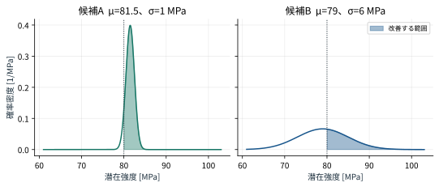
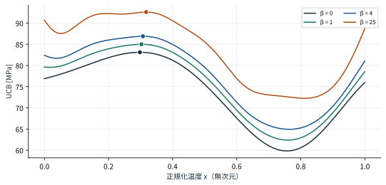
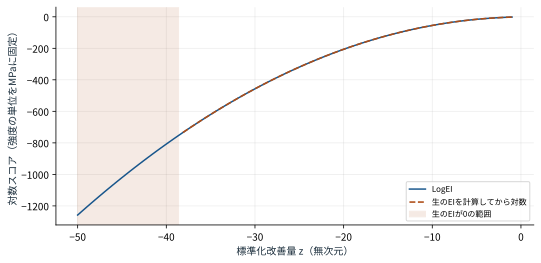

第5章 獲得関数の理論
学習目標 PI・EI・UCBを予測分布から評価し、ノイズや同時に選ぶ点数に応じて使い分ける。
この章では、次に一回だけ測れるとき、何を根拠に温度を選ぶかを考えます。前章のGPから得た同じ予測分布で、改善確率（PI）、期待改善量（EI）、上側信頼限界（UCB）を比較します。EIは期待値の定義から導き、計算機で値がゼロに丸まる領域をLogEIで調べます。
5.1 同じ事後で候補を提案する
仮想材料の強度を最大化します。使える入力は 第4章 と同じ正規化温度 \(x\in[0,1]\) です。獲得関数 \(a(x)\) は、現在の情報を使って、温度 \(x\) を次に測る価値を数値にしたものです。
6点の観測データを \(\mathcal D=\{(x_i,y_i)\}_{i=1}^6\)、候補温度での潜在強度を \(F_x=f(x)\) とします。GPによる単点事後分布は \(F_x\mid\mathcal D\sim\mathcal N(\mu(x),\sigma^2(x))\) です。\(\mu(x)\) と \(\sigma(x)\) は 第4章の予測区間 で青い帯に使った平均と標準偏差です。今回の設定では、例えば次の値を両章で共有しています。
正規化温度 \(x=0.50\)（160 °C）の潜在強度は、事後平均 75.56 MPa、標準偏差 2.00 MPa です。この二つの値を出発点にすると、同じ温度について予測した強度を次の測定候補の評価に使えます。
改善の基準値を \(b\) と書きます。観測最大値を潜在強度の基準として使いやすいのは、主に無雑音、またはノイズが候補間の差に比べて小さいときです。ここでは計算法を同じ尺度で比べるために、ノイズ付きの6点でも観測最大値を共通の固定閾値にします。これは既測定点における最良の潜在強度の推定とは別の設定です。例えば真の強度が80と79 MPaの点で、誤差が0と+4 MPaなら、観測最大値は83 MPaになります。基準が過大だと改善を見込みにくくなります。第7章では測定済み入力の潜在値も同時事後で扱うqLogNEIを比較します。
第5章のNotebookでは、予測分布を渡し、公開の獲得関数で候補を提案します。
import torch
from botorch.acquisition.analytic import (
LogExpectedImprovement,
ProbabilityOfImprovement,
UpperConfidenceBound,
)
from robotorchan.optim import optimize_acqf
from experiment import DTYPE, fit_material_gp, observations, setup
setup()
train_x, train_y, train_yvar = observations()
model = fit_material_gp(train_x, train_y, train_yvar)
best_f = train_y.max()
bounds = torch.tensor([[0.0], [1.0]], dtype=DTYPE)
acquisitions = {
"PI": ProbabilityOfImprovement(model, best_f=best_f),
"LogEI": LogExpectedImprovement(model, best_f=best_f),
"UCB": UpperConfidenceBound(model, beta=4.0),
}次に、3つの基準それぞれで測定候補を1点求めます。EIの候補計算には対数スコアのLogEIを使い、図の縦軸は元のEI [MPa] で表示します。
for name, acquisition in acquisitions.items():
candidate, _ = optimize_acqf(
acquisition, bounds, q=1, num_restarts=8,
raw_samples=128, options={"seed": 2026},
)
print(name, candidate.item())このコードが返すのは、獲得関数を大きくする次の測定候補です。探索中に評価するのはGPが予測した分布と獲得関数で、実測は候補が決まった後に行います。optimize_acqf の出力から候補を受け取り、温度の数値を °C で求めるときは \(140+40x\) を使います。

閾値はこの実行で約 83.063 MPa です。
| 獲得関数 | グリッド最大 \(x\) | 連続最適化の \(x\) | 温度 [°C] |
|---|---|---|---|
| PI | 0.2975 | 0.2977 | 151.91 |
| EI | 0.3025 | 0.3017 | 152.07 |
| UCB | 0.3075 | 0.3074 | 152.30 |
この実行では3つとも同じ強度の山を選びました。基準によって判断が分かれる場合は、第5.3節の二候補で確かめます。
グリッド入力の形は (401, 1, 1) です。先頭の401は比較する候補組の数、二番目の1が同時に選ぶ点数 \(q\)、最後の1が入力の列数 \(d\) です。一般に、\(B\) 組の候補を一度に採点するテンソルは \((B,q,d)\) です。APIが返す候補の形はこの例では (1, 1) です。\(q=1\) は一つの温度を提案する設定です。候補の微小な差を読むときは、図のグリッド間隔と連続ソルバーの違いにも注意します。
5.2 改善したかどうかを数えるPI
標準正規分布の密度を \(\phi(t)=(2\pi)^{-1/2}\exp(-t^2/2)\)、累積分布関数を \(\Phi(t)=\int_{-\infty}^{t}\phi(v)\,dv\) とします。固定した候補 \(x\) で \(\sigma(x)>0\) なら、以下では \(\mu=\mu(x)\)、\(\sigma=\sigma(x)\)、\(z=(\mu-b)/\sigma\) と略記します。PIは「潜在値が閾値を上回る」確率です。
\[ \begin{aligned} \mathrm{PI}(x)&=P(F_x>b\mid\mathcal D)\\ &=P\!\left(\frac{F_x-\mu}{\sigma}>\frac{b-\mu}{\sigma}\right)\\ &=1-\Phi(-z)=\Phi(z). \end{aligned} \tag{5.1}\]
第4章から引き継いだ \(x=0.50\) の値と、この実験の基準値 \(b=83.063\) MPa を使います。丸め前の数値で \(z\approx -3.746\)、\(\mathrm{PI}=0.000090\)（約 0.009%）です。標準正規分布の累積確率とBoTorchの計算を同じ入力で照合しています。
PIが数えるのは、潜在強度が基準を超える確率です。図 5.2 では、縦線の右側にある色付きの面積として読めます。たとえば、\(\mu>b\) の候補の \(\sigma\) を小さくすると \(z\) は大きくなり、PIは1に近づきます。逆に \(\mu<b\) の候補では、同じ \(\mu\) なら \(\sigma\) が大きい方がPIは高くなります。\(\sigma=0\) の場合、\(F_x\) は定数 \(\mu\) になるので、厳密不等号を使うPIは \(\mu>b\) のとき1、その他は0です。特に \(\mu=b\) を保ったまま正の \(\sigma\) をゼロへ近づけると \(\Phi(0)=0.5\) であり、点質量での確率とは挙動が異なります。
5.3 期待値からEIを導く
期待改善量は、改善したときの大きさも数えます。\((u)_+=\max(u,0)\) として、\(F_x\) の改善量を \((F_x-b)_+\) と置きます。\(\sigma>0\) のとき、\(F_x=\mu+\sigma Z\)、\(Z\sim\mathcal N(0,1)\) と書けます。改善量が正になる領域は \(Z>-z\) です。
\[ \begin{aligned} \mathrm{EI}(x) &=\mathbb E[(F_x-b)_+\mid \mathcal D]\\ &=\int_{-z}^{\infty}(\mu-b+\sigma t)\phi(t)\,dt\\ &=(\mu-b)\int_{-z}^{\infty}\phi(t)\,dt +\sigma\int_{-z}^{\infty}t\phi(t)\,dt\\ &=(\mu-b)\Phi(z)+\sigma\phi(z). \end{aligned} \tag{5.2}\]
最後の行は、\(\int_{-z}^{\infty}\phi(t)\,dt=\Phi(z)\) と、\(\phi'(t)=-t\phi(t)\) により \(\int_{-z}^{\infty}t\phi(t)\,dt=\phi(-z)=\phi(z)\) になることを使いました。\(\sigma=0\) では定義から \(\mathrm{EI}(x)=(\mu-b)_+\) です。固定 \(\mu,b\) で正の \(\sigma\) をゼロへ近づけても同じ値に収束します。ここでは最大化を採用しており、最小化では改善量を \((b-F_x)_+\) と定義します (Jones ほか 1998年)。
EIの単位は元の強度と同じ MPa です。たとえば \(\mu=b\) ならPIは \(1/2\) で、EIは \(\sigma/\sqrt{2\pi}\) です。改善の確率が同じでも、改善した場合の幅が大きい候補のEIが高くなります。逆に \(\mu<b\) のとき第1項は負になります。2項で非負の期待改善量を表すので、個々の項を独立した報酬として足し合わせるという読み方は避けます。この点は数値精度にも関係します。
二候補の順位が入れ替わる場合
ここでは二つの温度で得られたと仮定する潜在強度の周辺分布を比べます。改善の基準値は \(b=80\) MPa です。Aは平均が高く予測が集中しています。Bは平均が低く、予測のばらつきが大きい候補です。二候補の平均と標準偏差は、判断の違いを見やすくするために指定しました。

| 候補 | 平均 [MPa] | 標準偏差 [MPa] | PI | EI [MPa] | 改善した場合の平均改善量 [MPa] |
|---|---|---|---|---|---|
| A | 81.5 | 1.0 | 0.933 | 1.529 | 1.639 |
| B | 79.0 | 6.0 | 0.434 | 1.927 | 4.442 |
EIを「改善確率 \(\times\) 改善した場合の平均改善量」と考えると、二候補の違いを説明できます。\(P(F_x>b\mid\mathcal D)>0\) のとき、期待値を改善の有無で分けると、改善しない場合の項がゼロになるためです。Aは基準を超えやすく、Bは基準を超えた場合の伸びが大きい候補です。Notebookでは、色付き部分の面積を正規分布の右裾確率で計算し、EIは超過量を重みにした数値積分で求めます。
改善確率による逐次探索の初期の例はKushner、期待改善の初期の定式化はMockusらにさかのぼります (Kushner 1964年; Mockus ほか 1978年)。
数値積分およびBoTorchとの照合
Notebookでは、\(-5\le z\le 5\) の描画点を選び、式 5.2 の閉形式、SciPyの積分、BoTorchの ExpectedImprovement を比較します。さらに、BoTorchの ProbabilityOfImprovement と \(\Phi(z)\)、安定な領域で \(\log(\mathrm{EI})\) と LogExpectedImprovement を照合します。実験の許容誤差と実測差は教材の検証記録にあります。実際の候補選択は公開最適化APIで行います。検算時は閾値も入力と同じ倍精度のテンソルで渡し、丸めによる閾値の差を避けています。
5.4 UCBで探索の重みを変える
この章で使うUCBは、平均に標準偏差の重み付きの値を足します。
\[ \mathrm{UCB}_\beta(x)=\mu(x)+\sqrt{\beta}\,\sigma(x),\qquad \beta\ge 0. \tag{5.3}\]
\(\beta\) は無次元です。\(\beta=0\) なら事後平均の最大を選び、値を大きくすると標準偏差が大きい場所も有力になります。正の標準偏差を持つ単点正規分布では、UCBは分位点 \(\Phi(\sqrt{\beta})\) に対応します。\(\beta=4\) の \(\sqrt{\beta}=2\) は片側で約97.7%に相当します。同時の確率保証や、未知関数が必ずUCBより下にあることをこの解釈から導くことはできません。原著GP-UCBは反復ごとに \(\mu_{t-1}(x)+\sqrt{\beta_t}\sigma_{t-1}(x)\) を最大化します。有限候補集合 \(\mathcal X\) と原著のGP・観測モデルの仮定の下では、一例として \(\beta_t=2\log(|\mathcal X|t^2\pi^2/(6\delta))\) を使います。\(\delta\) は許容する失敗確率で、時刻と候補位置をまたいだ信頼域のための選び方です。連続領域や別のノイズ仮定では条件も式も変わります (Srinivas ほか 2010年, 第4節)。
実装の固定値は、予算と「未測定域もどこまで確認したいか」に合わせて選びます。例えば \(\beta\in\{0.25,1,4\}\) を比較し、候補の位置・予測平均・標準偏差、そして同じ予算での最終結果を記録すると、定数の影響を確認できます。本章の \(\beta=4\) は片側分位点の読み方と探索の重みを見せる例です。

曲線上の点が左から右へ単調に移動する必要はありません。\(\beta\) は温度を直接動かす値ではなく、平均と標準偏差に異なる重みをかける値です。候補が飛んだときは、平均と標準偏差の曲線を見直すと解釈できます。
5.5 LogEIで浮動小数点の影響を調べる
EIが数学的に正でも、低い改善確率の下では浮動小数点でゼロに丸まることがあります。式 5.2 の2項が打ち消し合う領域もあります。最適化では値だけでなく勾配が小さくなると候補の探索が難しくなります。解析型LogEIは、EIを求めてから対数を取るコードとは計算順と式の組み立てを変え、対数領域で安定に計算します (Ament ほか 2023年, sec. 4.1)。
正のEIに対し、対数は単調増加なので、厳密な値でEIを最大にする入力と解析型LogEIを最大にする入力は一致します。本章では強度の数値単位を MPa に固定して対数スコアを比較します。厳密なゼロのEIの対数は \(-\infty\) です。極端な例でLogEIが有限になるのは、正規モデルでは理論上は正の量が、生の浮動小数点計算でゼロになる場合です。

この実験は入力と事後分布を固定し、閾値だけを変えて \(z\in[-50,-1]\) を作りました。ゼロになる境界はdtypeや実装に依存します。図は数値安定性を示す実験であり、特定のベイズ最適化手法が他より優れることを測った比較ではありません。
理論式や単位を確認するときはEIで読み、BoTorchで候補を最適化するときは数値的に安定した LogExpectedImprovement と、バッチの qLogExpectedImprovement が推奨されています (BoTorch contributors, 日付なし; Ament ほか 2023年)。ログ変換は観測最大値の偏りを補正しないので、基準の不確かさには次節のnoisy EI系を使います。
5.6 ノイズ、バッチ、最適化の限界
| 条件 | 確認すること |
|---|---|
| 測定ノイズが強い | 観測最大値はノイズで大きくなり得ます。既に測った点の潜在値にも不確かさがあるなら、潜在の基準値を統合して評価する noisy EI 系を検討します。既観測点を渡す設計が必要です。 |
| 一度に \(q>1\) 点測る | 候補集合で得る最大改善を評価する場合、複数点の事後共分散が効きます。単点スコアの順位だけでは似た点を重複して選びやすくなります。モンテカルロ系のLogEIには滑らかな近似を使うものがあり、解析型単点LogEIと同じ議論をそのまま適用できません。 |
| 制約や複数の局所解がある | 正しい式でスコアを計算した後も実行可能な候補を探索する必要があります。再スタート数、変数範囲、座標、返る候補とスコアを点検します。 |
| 最後に選ぶ条件を知りたい | 次に測る候補と、実験を終えた後に推薦する条件は別の判断です。後者では利用目的に合わせ、たとえば事後平均を最大にする条件を別途検討します。 |
実装で最初に決めること
目的を最大化し、次に選ぶ点数と、改善の基準に使える情報を決めます。章内の比較では、同じ事後分布を使ったうえで評価基準を変えました。後続の実行では、次のように使い分けます。
| 問題設定 | 本書で使う入口 |
|---|---|
| 1点を評価し、比較用の基準 \(b\) を固定する | 解析型LogEI。最適化のたびに採用した \(b\) と尺度を記録する。第6章は、決定論的な試験の最良観測値で \(b\) を更新する |
| 複数点を測定前にまとめて提案し、\(b\) を固定する | qLogEI。第7章で \(q=2\) の同時最適化と逐次貪欲法を扱う |
| 既測定点の潜在値に測定ノイズ由来の不確かさがある | qLogNEI。第7章で既観測入力を比較の基準集合として渡す |
最小化では改善の向きと \(b\) の定義も反転します。本書の材料試験は、最後まで強度の最大化で統一します。
5.7 章末演習
- 確認。 \(b=80\) MPa、候補Aは \((\mu,\sigma)=(81,0.5)\)、候補Bは \((79,4)\) とします。PI、EI、\(\beta=4\) のUCBを計算し、順位の違いを説明してください。
- 操作。 UCBで \(\beta=0,1,4,25\) を試し、候補位置を記録してください。候補が動いたときに平均と標準偏差がどう変わるか、前章の図と照らし合わせてください。
- 操作。 問題1の二候補について \(b=78\) と \(b=82\) に変え、PIとEIそれぞれでAとBの順位を調べてください。数値上の同点と数学的な同点の違いも考えてください。
- 発展。 観測ノイズを大きくしたとき「現在最良の観測を超えること」と「最良の潜在強度を見つけること」が乖離する状況を説明してください。
まとめと次のステップ
PIは改善する確率、EIは改善の期待量、UCBは平均と不確かさを係数で組み合わせたスコアです。今の実験で目的とする価値と分布を揃えて候補を評価します。第6章では、候補を測定してデータを更新し、残りの予算で次の候補を選びます。第7章では、測定ノイズやバッチの場合の基準を扱います。